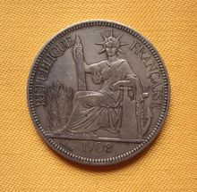
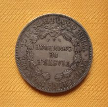

坐洋
法属印度支那贸易银圆，俗称坐洋，为清末在华流通的外国银圆之一。
中文名
坐洋
简 介
学名：法属印度支那贸易银圆
流通区域
坐洋，根据1952年在人民银
名字来源
银元正面希腊自由女神坐像
简介
学名：法属印度支那贸易银圆，俗称坐洋，为清末民初在华流通的外国银圆之一。银币正面为自由女神坐像，背面的装饰图案为麦穗，法文有“贸易银元”和“法属印度支那”等。
流通区域
坐洋，根据1952年在人民银行内部出版的《银元图说》，其正式名称应为安南银元，亦称“坐人”、“法光”、因为这种银币正面所铸的自由女神坐像头上的花圈有光芒七束，俗称“七角”。但为了叙述方便下文仍采用“坐洋”的说法。
法属印度支那位于东南亚印度支那半岛东部，包括法属东京、安南、交趾支那、老挝和柬埔寨等地（相当于现今的越南、老挝和柬埔寨）。总面积741,242平方公里。 印度支那居民的祖先，是公元二世纪由中国黄河流域南迁者，1858年，法兰西第二帝国入侵安南（今越南），1884年，强迫安南签订第二次《顺化条约》，安南沦为法国殖民地。
名字来源
银元正面希腊自由女神坐像，这也是“坐洋”得名的原因。坐洋的前身为法国政府在交趾支那（南部越南政权）于1879年
坐洋
开始铸造10仙（Cent，也译作“分”，下同）、20仙、50仙、1皮（piastre，音译皮阿斯特，法制单位元）的交趾支那（cochin
china）银币。时至1885年，法属安南政府为抵制墨西哥银币及美国贸易银币，于1885年开始铸造一元银币。
由于坐人开始铸造无论从成色及重量（27.215克，90%成色，1885年-1895年制规格，被称为加重坐洋）上都优于鹰洋，很快就占领了统治地位。也正因为其纯重高于墨西哥鹰洋（27克），多有藏匿及熔化者，故不能流通。因此，于1895年将重量减低，将一元坐洋的重量由原来的27.215克减至27克（1895-1928年制规格，被称为普重坐洋）。也正是因为其成色高重量足，晚晴以至民国，在中国南部的云南，广西、广东、福建沿海以及国内大部分商贾聚集地通用。一元坐洋于1928年停铸，随后于1931年以谷物女神头像重新开铸了1元，其的设计图案、重量（1931制减重为20克，成色不变）已和原先的坐洋迥异，人们习惯上仍然称其为坐洋，但须折价使用。
基本常识
“坐洋
坐洋背面
”的主币“壹圆”的铸造时间从1885年开始，在巴黎铸造，至1928年共计43年。该主币1885年至1895年年号的铸币均为27.125克重，称之为“加重版”；1895年至1928年的24个年号的铸币重量均为27克重，称为“普通版”。值得注意的是，1895年是加重版和普通版同铸的年号，另有有传闻1905年有“加重版”，但至今未发现实物，其真实程度尚无法判定。
“坐洋”由主币和辅币共4枚组成一套。称呼辅币时，通常以“坐洋半圆”“坐洋50分”“中坐洋”，或“坐洋二毫/一毫”“坐洋20分/10分”“10/20仙小坐洋”一类称呼。
“坐洋”的形象虽然与其后英国铸造的“站洋”中持戟武士傲然挺立船头的形象大相径庭，但却丝毫无法掩盖殖民主义者大规模进行经济侵略的野心。
历史变革
《清季外交史料》里出使英法大臣曾纪泽在1879年6月24日奏章中写到"．…‥法国外部瓦定敦咨称:法国现铸造大圆银钱，用之于安南等处地方，并拟用之于附近各国，甚愿贵国收受此钱通行天下，并望海关衙门准其收用…"，这个曾大人的意见是"．…‥我国家于商民生计，纯任自然，故可以明告该国『使知法钱可兴美钱一律看待，而不能外邀利益也。至于所请海关收用一节，查与…之例不合似难照准…"于是这个折子得到一个"该衙门知道"的意见后 曾大人的观点便成大清政府的态度 放任自流，官方不受。
法属印度支那货币均由法国货币局的巴黎造币厂铸造。
“坐洋”银币于1879年，法国东方汇理银行开始发行50分、20分和10分等面额的银币。由于法国人主观上的优柔寡断和客观上国内政治经济的一团糟而拖累了6年，直至1885年才开始铸造1元银币(俗称“大七角”，一皮阿斯特相当于墨西哥贸易银币壹元，合一百仙，)。
各种坐洋断断续续发行至1937年，因为战争的阴影而宣告结束。而中国在1933年实行废两改元后，船洋法币逐渐一统市场，外国银圆在中国的好日子不复再了，恰好的是这个时候坐洋也销声匿迹了。二次大战城结束后，法国短暂统治印度支那，再没有再发行过银质货币，坐洋的发行期为1903年至1923年。
其他信息
文字解读
银币正面的主图为手执束棒的自由女神坐像，坐像的两侧铸法文文字是：REPUBLIQUE
FRANCAISE（法兰西共和国）。女神座下方有小字法文BARRE和该币发行的年份。银币背面的主图案为一花环，周圈为说明文字，花环上方铸法文为：FRANCAISE
INDO-CHINE（法兰西印度支那），银币花环中间的横向文字为银币的面额：PIASTRE
DE COMMERCE(皮阿斯特的贸易银)。银币花环下方文字为：TITRE 0.900 POIDS 27 GR（含银千分之九百，重量27克）。整块银币背面文字的中文意译为：法兰西（所属的）印度支那（银币）。壹贸易银元重27克，含纯银千分之九百。正下方中间位置的双火炬中的小字“A”则可视为版别。
年号与版别
除了1921年、1922年有“H”字版和无字版之外，其他年份的一元坐洋都是属于“A”版。法国货币的使用单位是“法朗”，法属的印度支那地区发行的货币单位不用“法朗”而用“皮阿斯特”，其中原因之一可能是为了显示表示印度支那是其海外殖民帝国的一部分。其二是为了区别本土货币和殖民地区的货币。
“坐洋”银币做工精良，成色足，受到了亚洲各国人民的青睐。1元(皮阿斯特)银币开铸于1885年，停铸于1928年，总共发行35种，；50分“七角”银币开铸于1885年，停铸于1936年，共发行9种；二十仙与十仙“七角”银币开铸于1885年，停铸于1937年,20分共发行35种，10分币共发行39种。由于原料银供应不足或市场需求量变化的原因。每种面额“七角”银币都有一些年份没有开铸。安南银币在印度支那发行长达59年间，1元坐洋仅有1885～1890、1893～1910、1913、1921、1922、1924～1928年铸造，而其中的1891、1892、1911、1912、1914～1920、1923年都没有开铸1元“坐洋”银币。50分的“坐洋”银币仅有1879、1884、1885、1889、1894～1896、1900、1936年等9个年份开铸，其他年份都没有开铸。20分的坐洋在1886、1888、1890、1891、1904～1907、1910、1913、1915、1917～1919、1926、1931～1936年没有开铸银币。10分的坐洋在1886、1887、1890、1891、1904～1907、1915、1918、1926、1931～1936年也没有开铸银币。 法国自1885年始铸坐洋至1928年停铸，历时43年，其中1892、1911、1912、1914~1920、1923等年未发行外，其它32年均有发行；按照年号、重量、记号的分别排列组合进行统计，坐洋共计38个版式；如：1885~1895之间发行均为加重版，重量为27.215克，1895~1928之间改为普通版，重量减为27克------这是按照年号、重量版块的区别；再如：1921、1922两个年号中分别出现“A”版（极少见，未见流通币，存在争议，认为是样币或伪造）、“H”版和无字版三种，而其它年号的坐洋则只有“A”版；除了按照上述情况收集坐洋外，还必须注意坐洋的收藏价格相对较高，其中品相是决定价格的重要因素，不同版块是影响价位的参考因素，个别稀缺品是必须注意的关键因素。在鉴定真伪后，1890年加重版应属于珍稀品种；1885、1888、1893属于加重版的稀少品，而1910、1922无字版属于普通版的稀少品。
相关品种
1931年，法属印度支那发行了新版本的1元(皮阿斯特)银元，正面主图为自由女神左侧头像，重量仅为20克，俗称“坐洋1931”。
减重的银元受到抵制，流通不便，于是在1936年发行了13克90%银的原重坐洋50分；之后，随着中国法币改革和二战的爆发，法属印度支那不再发行银币。